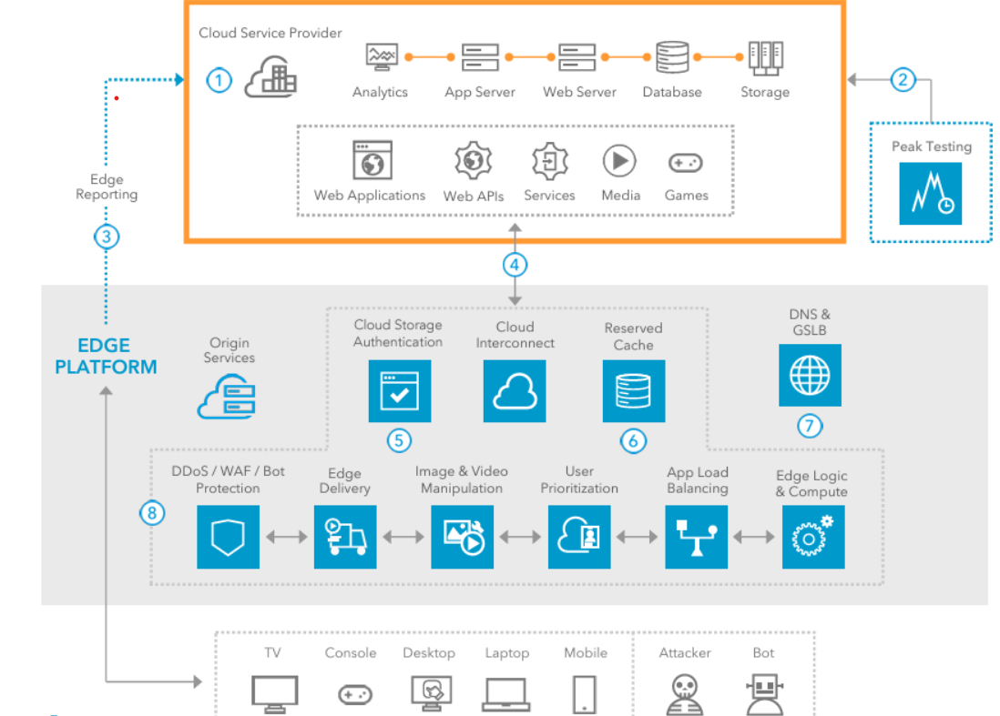

Cloud Computing Service Architecture (Akamai Connected Cloud)
Akamai’s cloud computing service, built on the acquisition of Linode, provides scalable compute and storage solutions by extending its edge network, enabling businesses to run applications closer to users for faster performance.[2]
Step-by-Step Process:

- Step 1: Developer Deploys an Application
A developer uploads their application (e.g., a gaming backend or regional analytics tool) to Akamai’s Cloud Portal, a web interface for managing cloud resources. The application includes code, configurations, and dependencies, which can be packaged as containers (e.g., Docker) or serverless functions (e.g., via Akamai EdgeWorkers). - Step 2: Workload Distribution to Edge Compute Regions
Akamai distributes the application across its Edge Compute Regions, which are Compute Nodes (virtualized servers) located in over 700 cities. These nodes operate on the Intelligent Edge Platform, ensuring the app runs close to users for low-latency access. An Edge Orchestration Layer manages this distribution by performing horizontal scaling (adding more nodes based on traffic increases, guided by auto-scaling policies like CPU/memory usage thresholds), health checks (ensuring nodes are operational), load balancing (distributing requests evenly across nodes), and traffic routing (directing requests to the best node). - Step 3: User Interacts with the Application
When a user interacts with the app (e.g., starting a game), their request is routed to the nearest compute node using Akamai’s Dynamic Request Routing System. This system considers factors like server load (how busy the node is), network congestion, and user location to ensure the request goes to the optimal node for fast processing. - Step 4: Compute Node Processes the Request
The Compute Node processes the request using Virtualized Resources such as containers or virtual machines (VMs). If the app needs to store or retrieve data (e.g., a player’s game progress), it uses Akamai’s Distributed Storage (also called Object & BLOB Storage), which stores data across regional storage nodes for reliability and speed. The storage system ensures data availability through data replication (copying data across multiple nodes) and uses eventual consistency models to balance performance and reliability, ensuring data is accessible even if one node fails. - Step 5: Real-Time Workloads with Qualified Partners
For latency-sensitive applications (e.g., live gaming or media rendering), Akamai’s Qualified Compute Partners—such as integrations with Akamai’s EdgeWorkers or third-party tools—run specialized workloads. These include observability tools like logging (e.g., for error tracking), monitoring (e.g., for performance metrics), and tracing (e.g., for request flow analysis), ensuring real-time performance without delays. - Step 6: Integration with Other Clouds
Akamai’s cloud supports hybrid workloads by integrating with major cloud platforms like AWS, Azure, and GCP. Akamai manages secure ingress/egress (data entering and leaving the system) using private interconnects (e.g., Akamai Cloud Interconnect) or VPNs, and handles internal service meshes (communication between app components) using tools like Istio or Linkerd, ensuring secure and seamless operation across different cloud environments. - Step 7: Response Delivered to the User
After processing, the compute node sends the result (e.g., game update) back to the user through the same Edge Network, ensuring high performance and reliability. Use cases include low-latency gaming servers, regional analytics, media rendering, and latency-sensitive APIs.
All Components:
- Cloud Portal: Interface for developers to upload and manage applications.
- Edge Compute Regions (Compute Nodes): Virtualized servers in over 700 cities for running apps.
- Intelligent Edge Platform: The network that connects compute nodes globally.
- Edge Orchestration Layer: Manages horizontal scaling, health checks, load balancing, and traffic routing.
- Auto-Scaling Policies: Triggers scaling based on CPU/memory usage.
- Load Balancing: Distributes requests evenly across nodes.
- Virtualized Resources (Containers/VMs): Isolated environments to run applications.
- Dynamic Request Routing System: Routes user requests to the optimal compute node based on load, congestion, and location.
- Distributed Storage (Object & BLOB Storage): Stores app data across regional nodes.
- Data Replication & Eventual Consistency Models: Ensures reliability and performance in storage.
- Qualified Compute Partners (e.g., EdgeWorkers): Run low-latency workloads like observability tools (logging, monitoring, tracing).
- Interconnectivity (AWS, Azure, GCP): Supports hybrid workloads with other cloud platforms.
- Private Interconnects (e.g., Akamai Cloud Interconnect) & VPNs: Secures data ingress/egress.
- Internal Service Meshes (e.g., Istio, Linkerd): Manages secure app communication.
- Edge Network: Delivers responses to users with low latency.